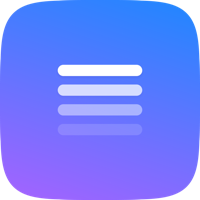

화면 오른쪽 끝에서 슬라이드로 나오는 체크리스트
SideNote.dmg 를 열고 SideNote 를 응용 프로그램 폴더로 옮겨 주세요.화면 오른쪽 끝에 얇은 색 선 네 개가 있어요. 마우스를 가까이 대면 Today · Tomorrow · Month · Memo 가 펼쳐집니다. 눌러서 열면 됩니다.
⌃ + ⌥ + N 으로도 열고 닫을 수 있어요. 메뉴바의 체크리스트 아이콘은 왼쪽 클릭이 열기·닫기, 오른쪽 클릭이 설정입니다.
| 단축키 | 내용 |
|---|---|
| ⌘ + N | 새 항목 |
| ⌘ + ⇧ + N | 지금 줄에 메모 달기 |
| ⌘ + ↩ | 완료 표시 |
| ⌘ + ⌫ | 줄 지우기 |
| Esc | 편집 끝내기 (한 번 더 누르면 닫힘) |
| ⌘ + W | 닫기 |
기호는 키보드에 있는 그대로예요.
⌘ 커맨드 · ⇧ 시프트 · ⌃ 컨트롤 ·
⌥ 옵션 · ↩ 엔터 · ⌫ 딜리트
줄에 마우스를 올리면 단추 세 개가 나타납니다. 메모를 달거나, 잡아서 순서를 바꾸거나, 더보기에서 복사·삭제를 할 수 있어요. 잡은 채로 위쪽 탭까지 끌면 그 목록으로 옮겨집니다.
메뉴바 아이콘 오른쪽 클릭 → "구글 계정으로 로그인…" 을 누르면 적어 두신 내용이 본인의 구글 드라이브에 보관됩니다. 다른 컴퓨터에서 같은 계정으로 로그인하면 그대로 이어서 쓸 수 있어요.
적어 두신 내용은 이 파일 하나에 들어 있습니다.
~/Library/Application Support/SideNote/notes.json
Backups 에 앱을 켤 때마다 한 벌씩 자동으로 쌓입니다.
최근 30벌까지 보관돼요.구글 계정으로 로그인해 두시면 드라이브에도 한 벌 보관되므로, 따로 챙기지 않으셔도 됩니다.
새 버전이 나오면 앱이 알아서 받아 둡니다. 기다리지 않고 지금 확인하려면 메뉴바 아이콘 오른쪽 클릭 → "업데이트 확인…" 을 누르세요.